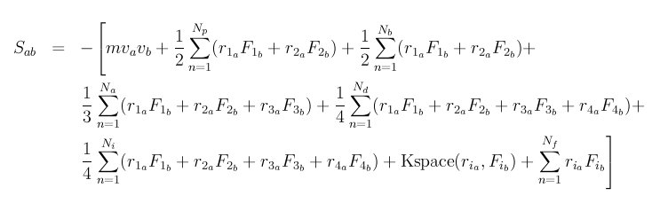

compute stress/atom command
Syntax
compute ID group-ID stress/atom temp-ID keyword ...
- ID, group-ID are documented in compute command
- stress/atom = style name of this compute command
- temp-ID = ID of compute that calculates temperature, can be NULL if not needed
- zero or more keywords may be appended
- keyword = ke or pair or bond or angle or dihedral or improper or kspace or fix or virial
Examples
compute 1 mobile stress/atom NULL
compute 1 mobile stress/atom myRamp
compute 1 all stress/atom NULL pair bond
Description
Define a computation that computes the symmetric per-atom stress tensor for each atom in a group. The tensor for each atom has 6 components and is stored as a 6-element vector in the following order: xx, yy, zz, xy, xz, yz. See the compute pressure command if you want the stress tensor (pressure) of the entire system.
The stress tensor for atom I is given by the following formula, where a and b take on values x,y,z to generate the 6 components of the symmetric tensor:
The first term is a kinetic energy contribution for atom I. See details below on how the specified temp-ID can affect the velocities used in this calculation. The second term is a pairwise energy contribution where n loops over the Np neighbors of atom I, r1 and r2 are the positions of the 2 atoms in the pairwise interaction, and F1 and F2 are the forces on the 2 atoms resulting from the pairwise interaction. The third term is a bond contribution of similar form for the Nb bonds which atom I is part of. There are similar terms for the Na angle, Nd dihedral, and Ni improper interactions atom I is part of. There is also a term for the KSpace contribution from long-range Coulombic interactions, if defined. Finally, there is a term for the Nf fixes that apply internal constraint forces to atom I. Currently, only the fix shake and fix rigid commands contribute to this term.
As the coefficients in the formula imply, a virial contribution produced by a small set of atoms (e.g. 4 atoms in a dihedral or 3 atoms in a Tersoff 3-body interaction) is assigned in equal portions to each atom in the set. E.g. 1/4 of the dihedral virial to each of the 4 atoms, or 1/3 of the fix virial due to SHAKE constraints applied to atoms in a a water molecule via the fix shake command.
If no extra keywords are listed, all of the terms in this formula are included in the per-atom stress tensor. If any extra keywords are listed, only those terms are summed to compute the tensor. The virial keyword means include all terms except the kinetic energy ke.
Note that the stress for each atom is due to its interaction with all other atoms in the simulation, not just with other atoms in the group.
Details of how LAMMPS computes the virial for individual atoms for either pairwise or manybody potentials, and including the effects of periodic boundary conditions is discussed in (Thompson). The basic idea for manybody potentials is to treat each component of the force computation between a small cluster of atoms in the same manner as in the formula above for bond, angle, dihedral, etc interactions. Namely the quantity R dot F is summed over the atoms in the interaction, with the R vectors unwrapped by periodic boundaries so that the cluster of atoms is close together. The total contribution for the cluster interaction is divided evenly among those atoms.
The dihedral_style charmm style calculates pairwise interactions between 1-4 atoms. The virial contribution of these terms is included in the pair virial, not the dihedral virial.
The KSpace contribution is calculated using the method in (Heyes) for the Ewald method and by the methodology described in (Sirk) for PPPM. The choice of KSpace solver is specified by the kspace_style pppm command. Note that for PPPM, the calcluation requires 6 extra FFTs each timestep that per-atom stress is calculated. Thus it can significantly increase the cost of the PPPM calculation if it is needed on a large fraction of the simulation timesteps.
The temp-ID argument can be used to affect the per-atom velocities used in the kinetic energy contribution to the total stress. If the kinetic energy is not included in the stress, than the temperature compute is not used and can be specified as NULL. If the kinetic energy is included and you wish to use atom velocities as-is, then temp-ID can also be specified as NULL. If desired, the specified temperature compute can be one that subtracts off a bias to leave each atom with only a thermal velocity to use in the formula above, e.g. by subtracting a background streaming velocity. See the doc pages for individual compute commands to determine which ones include a bias.
Note that as defined in the formula, per-atom stress is the negative of the per-atom pressure tensor. It is also really a stress*volume formulation, meaning the computed quantity is in units of pressure*volume. It would need to be divided by a per-atom volume to have units of stress (pressure), but an individual atom’s volume is not well defined or easy to compute in a deformed solid or a liquid. See the compute voronoi/atom command for one possible way to estimate a per-atom volume.
Thus, if the diagonal components of the per-atom stress tensor are summed for all atoms in the system and the sum is divided by dV, where d = dimension and V is the volume of the system, the result should be -P, where P is the total pressure of the system.
These lines in an input script for a 3d system should yield that result. I.e. the last 2 columns of thermo output will be the same:
compute peratom all stress/atom NULL compute p all reduce sum c_peratom[1] c_peratom[2] c_peratom[3] variable press equal -(c_p[1]+c_p[2]+c_p[3])/(3*vol) thermo_style custom step temp etotal press v_press
Output info:
This compute calculates a per-atom array with 6 columns, which can be accessed by indices 1-6 by any command that uses per-atom values from a compute as input. See Section 6.15 for an overview of LAMMPS output options.
The per-atom array values will be in pressure*volume units as discussed above.
Restrictions
none